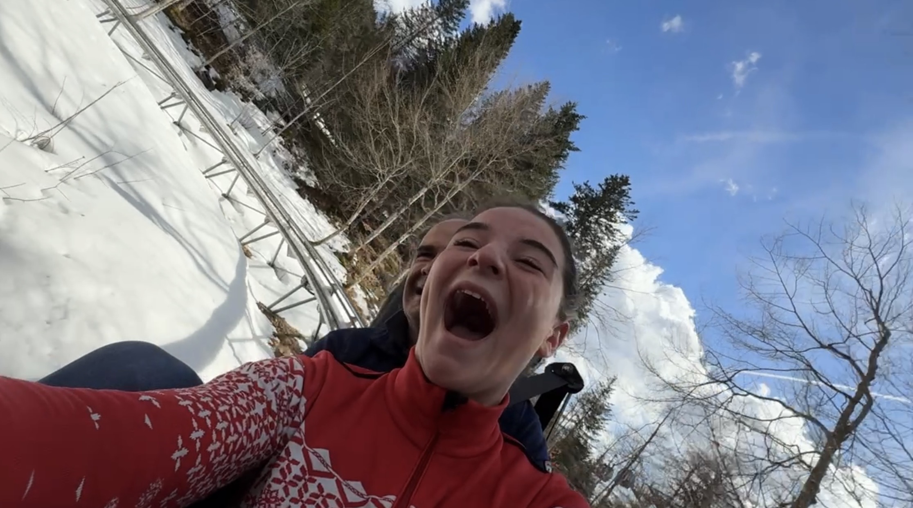

Toussaint aux Carroz : Color Run et luge hantée le 31 octobre

Les vacances de la Toussaint approchent (du 17 octobre au 2 novembre 2026), et deux rendez-vous sortent du lot aux Carroz d'Arâches : une course colorée pour Octobre Rose le dimanche 18 octobre, et une luge sur rail transformée en parcours d'épouvante le samedi 31 octobre. Voici les horaires, les tarifs et nos conseils pour les caler dans votre séjour. Pour le reste du programme, notre guide des activités de la Toussaint fait le tour de la quinzaine.
Le Color Run Octobre Rose : dimanche 18 octobre
Ce rendez-vous festif et solidaire se déroule au skatepark, route du Mont Favy. On court ou on marche en se faisant asperger de poudre colorée, sur un parcours de 5 km ou de 7 km, accessible à tous les niveaux.
- 9 h : café offert à l'accueil.
- 9 h 30 : échauffement collectif.
- 10 h : départ de la course.
L'inscription coûte 8 € par participant, via le QR code de l'affiche ou sur place. Les bénéfices reviennent à l'association Soroptimist, qui soutient la recherche médicale et le bien-être des malades du cancer du sein. Les animaux de compagnie sont les bienvenus, et un verre de l'amitié clôt la matinée. Bon plan : l'entrée à l'Aquacîme est à 5 € après la course, de quoi récupérer au chaud, bassin et sauna compris.
Peur sur la Luge : samedi 31 octobre
Le soir d'Halloween, la luge sur rail se transforme en parcours d'épouvante, de 15 h à 20 h, sous réserve de conditions météo favorables. Deux versions se succèdent :
- De 15 h à 18 h : la version famille, pour les plus jeunes.
- De 18 h à 20 h : la version « terreur », à partir de 14 ans.
- À 20 h : feu d'artifice.
Comptez 8 € pour un adulte. La descente fait 850 m pour environ 5 minutes, après une montée de 350 m, en luge simple ou double. À partir de 4 ans (1,05 m minimum), l'enfant doit être accompagné ; à partir de 9 ans (1,40 m minimum), il peut descendre seul. Les animaux ne sont pas admis, et les personnes sensibles sont invitées à s'abstenir. Des boissons sont proposées sur place.
Comment organiser votre séjour autour de ces deux dates
Le Color Run tombe le deuxième jour des vacances : arrivez le samedi 17 octobre et vous profitez du dimanche matin. Pour Halloween, privilégiez la version famille en fin d'après-midi avec de jeunes enfants, et gardez la version terreur pour les ados et les adultes. Pensez à de bonnes chaussures et à une veste chaude : à 1 140 m d'altitude, les soirées d'octobre sont fraîches.
Les deux événements se dérouleront aux Carroz même, à quelques minutes de l'appartement : la télécabine est à 3 minutes à pied du Lodge. Au retour, la terrasse plein sud de 45 m² accueille le brasero, et le bain nordique en bois en option est idéal pour se réchauffer. Pour les balades du lendemain, voyez nos idées de vacances d'automne en pleine nature.
Accès : sortie 19 de l'A40, puis environ 15 minutes ; Genève est à 50 minutes (45 minutes depuis l'aéroport). La conciergerie de Clémentine assure l'accueil.
Réservez votre Toussaint aux Carroz
Appartement 4★ pour 6 personnes, terrasse de 45 m² et bain nordique, au centre des Carroz d'Arâches. Les deux semaines d'automne partent vite.
Voir les disponibilités